1. Gestio de processos
El primer pas ha estat crear els fitxers de la missió i aplicar els permisos
corresponents per a poder executar-los i els executem, veient que funcionen
correctament.
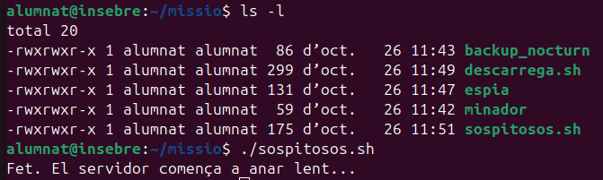
Tot seguit, comprovem que funcioni correctament i que s'hagin creat els
processos i que estiguin "orfes", depenent de "systemd" en comptes de en
"sospitosos".
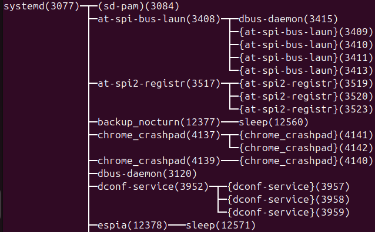
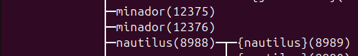
Com podem veure ara, els processos que es troven a dalt de tot són els
minadors, consumint gairebé la meitat d'un nucli cada un.
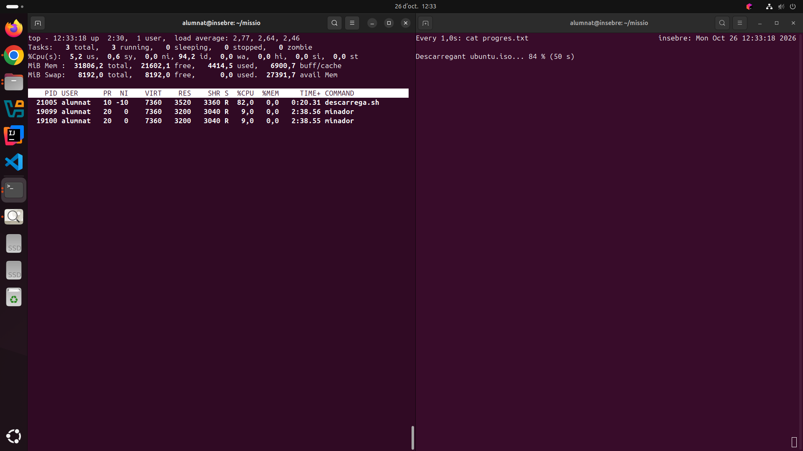
Tot seguit, com podem veure, els 4 processos, els 2 minadors, espia i
backup_nocturn depenen d'un sol pare, de systemd i ho descobrim gràcies
al comandament "ps -o pid,ppid,user,stat,etime,%cpu,comm -C minador,espia,backup_nocturn".
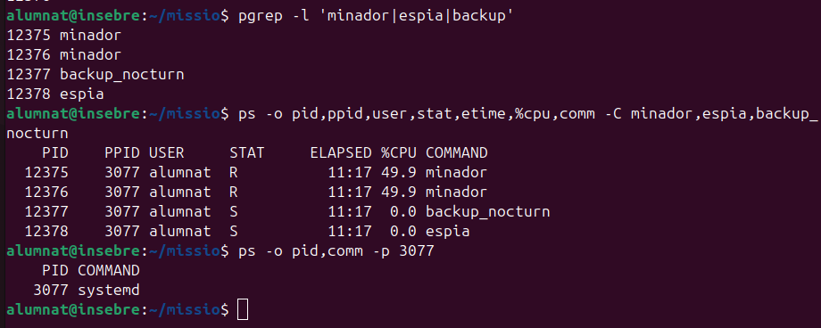
Com es pot veure, hem intentat fer els comandaments bg %1, que porta el
proces a segon pla, fg %1 que porta el process a primer pla, i jobs -l,
que llista les tasques que s'estan duen a terme, com descarrega, en aquest
cas.
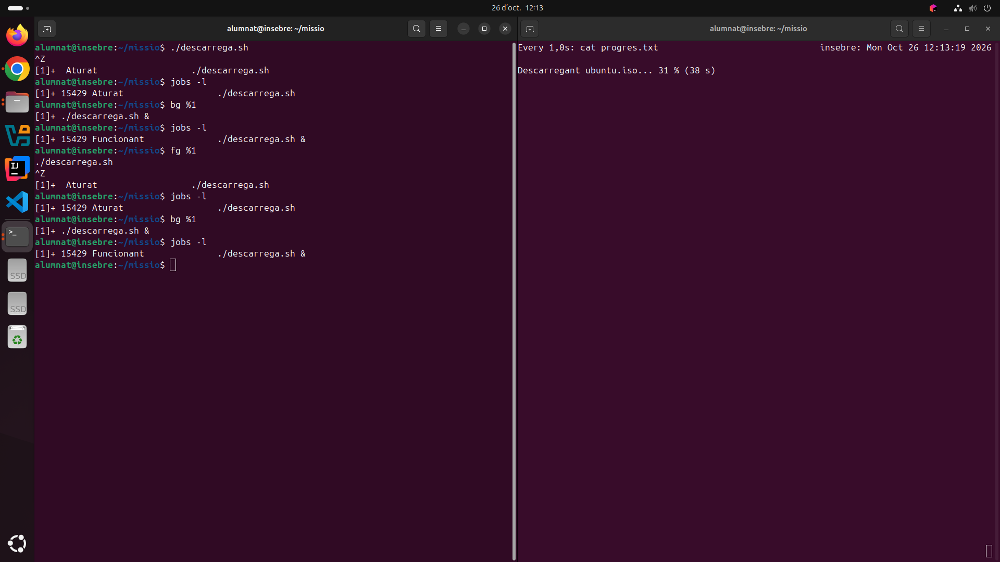
A continuació, com podem veure, el programa espia no s'ha pogut eliminar
amb "kill", però si amb "kill -9". A la vegada, backup_nocturn ha pogut
ser pausat i reactivat correctament.
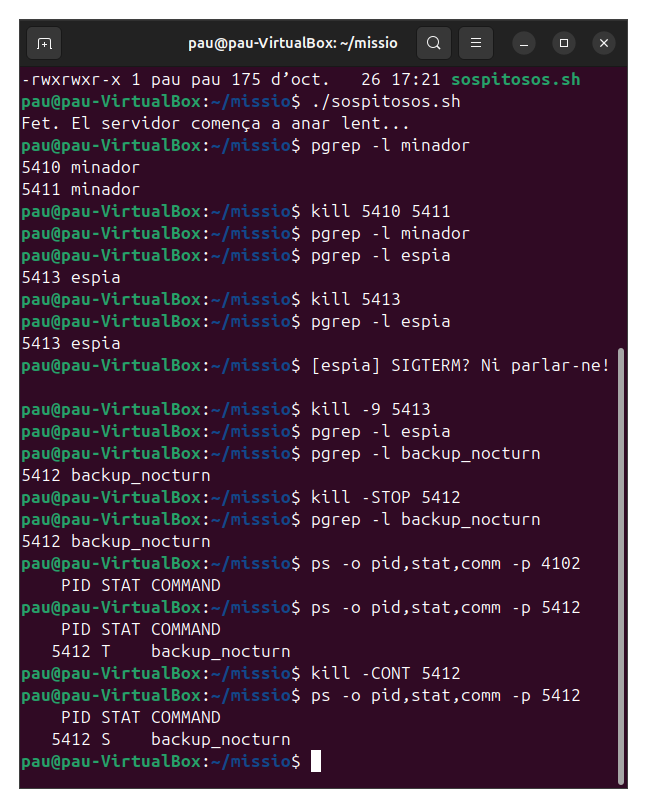
Per a acabar, hem pogut comprovar que el process de Descarrega pot
proseguir en segon pla correctament fins a ser complet.
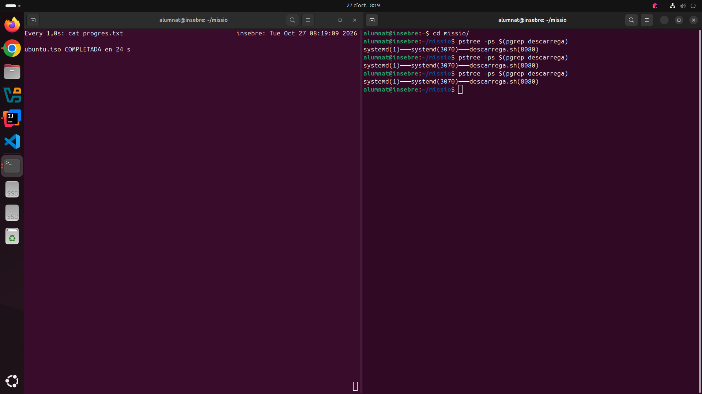
↑ Tornar a l'índex
2. Gestió de discs
Com podem veure, dintre del original.sha, surten els codis hash de foto.png,
apunts.pdf i notes.txt.
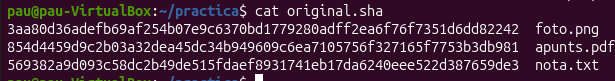
Com podem veure, en montar el disc, l'unic directori que es crea es el
"lost+found".
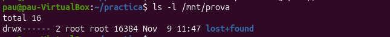
En recuperar els fitxers, podem comprovar que són els mateixos pel codi
hash que podem veure amb el comandament "sha256sum fitxer".
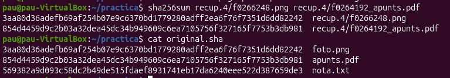
Com podem veure, tot i no ser visible, podem trobar la frase de notes.txt,
o sols un fragment com es "pizza" en el nostre cas.
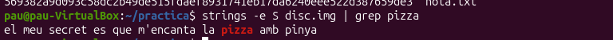
Per a acabar, quan intenetem comprovar si s'han recuperat fitxers despres
del nou formateig, podem comprovar que no s'ha pogut recuperar ningun.
Preguntes:
1. Es trovaben al fitxer "lost+found" de la imatge de disc.
2. Perque s'han guardat les dades que es trovaven als fitxers, però no
les dades d'etiquetatge i nom dels fitxers.
3. Per que te les mateixes dades hash que la original, i si tansols un byte
hages cambiat, el codi hash seria diferent.
4. Per les dades d'encapçalament, que en ser practicament iguals en els
fitxers de sols text, no pot diferenciar-los entre ells, però encara així
el recupera com si fos un fitxer de text com la resta, el qual podem trobar
buscant pel text que te.
5. Al nivell 3, hem fet un formateig d'alt nivell, ja que hem sobreescrit
el sistema de fitxers, però en el nivell 5 hem fet una simulació d'un
formateig de baix nivell o de fabrica.
6. Jo faria un de baix nivell, per a eliminar completament les dades i
evitar que el comprador pugui recuperar les imatges que es troben i no
trobi res que no desitjem.
↑ Tornar a l'índex
Com podem apreciar, la mida de la partició es de 1GB, mentre que els sectors
són de 512 bytes cada un.
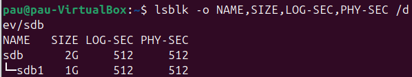
A continuació es pot veure com els blocs són de 2048 bytes de mida actual i minima.
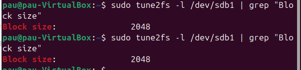
Seguidament, podem veure els detalls de les particions del disc sdb i de les seves
particions.
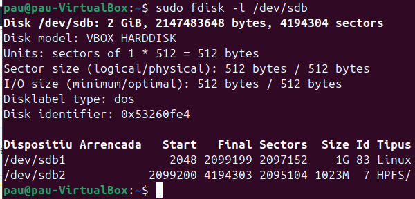
Ara hem canviat el sistema de fitxers de la partició 2 de ext4 a NTFS i ho hem
confirmat per si fallava.
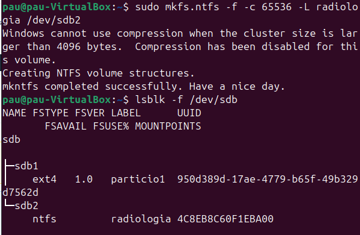
A continuació es pot veure com els blocs són de 65536 bytes de mida actual i minima.
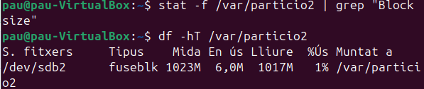
En aquest cas, ens assegurem que l'script de automuntatge de sdb2 funciona sense
errors i els detalls de la partició.
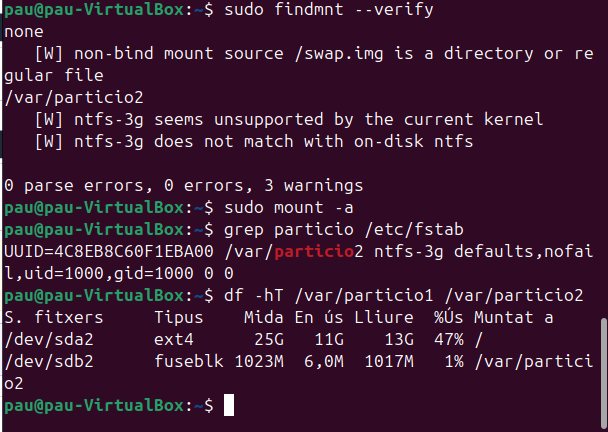
Ara, podem veure la informació de les ubicacions de informe.txt, quina mida té i
la maida que ocupa en la partició
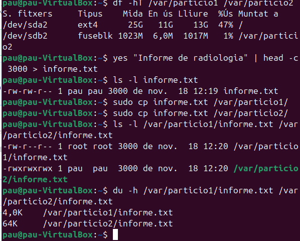
Preguntes:
1. El sector es l'unitat més petita sobre la qual el disc pot llegir o escriure.
La mida dels sectors la fixa el fabricant, nosaltres no la podem modificar.
2. La mida del meu disc es de 512 bytes, que és la mida tradicional per als
sectors
3. El bloc és la mida minima que ocupara un fitxer, per exemple, si els blocs
són de 1KB, un fitxer de menys d'1KB seguira ocupant-lo, ja que esta ocupant
el bloc. La principal diferencia es que el bloc es pot definir la seva mida,
en crear la partició.
4. La mida de bloc del meu disc es de 2048 bytes. En total hi caven 4 sectors
5. Un fitxer de 3000 bytes ocuparia 2 blocs, i si els clusters són de 64KiB,
sols n'ocupara 1, però caven uns 128 sectors, ja que cada KiB és 1024 bytes, la
meitat d'un sector.
6.
↑ Tornar a l'índex